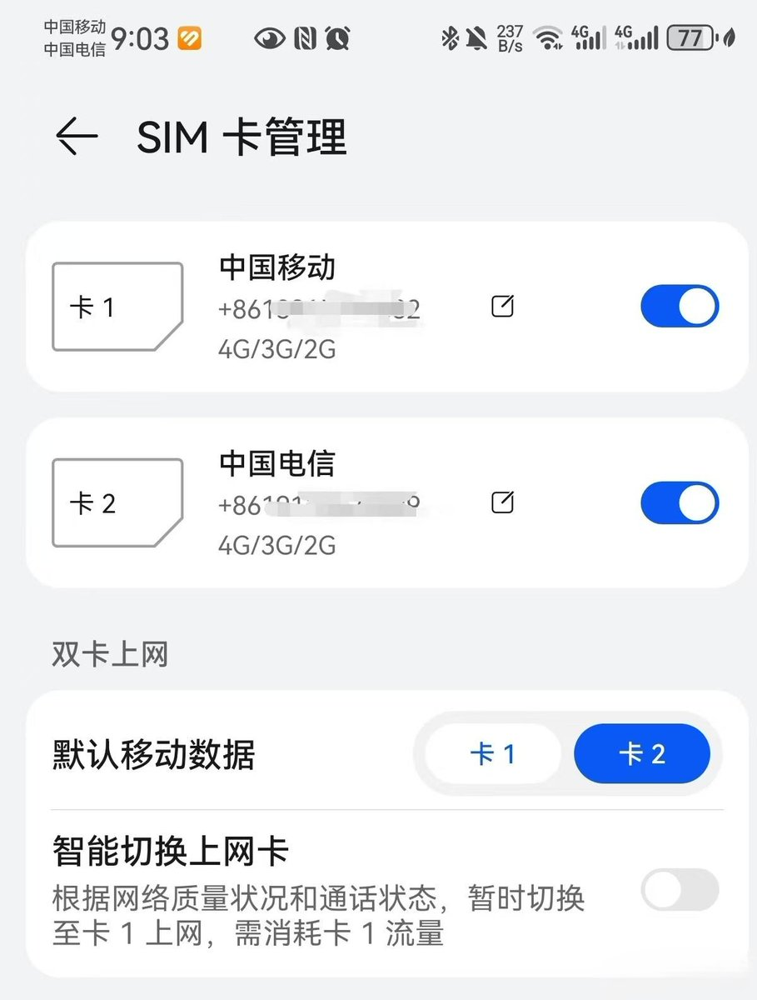

@moonlight_ruri 双卡双待的状态将同时激活两张卡的VoLTE通道，通过时分复用modem的射频资源来与ims服务器通信，设定为“主数据卡”的激活数据通道，卡1和卡2根本只是两个卡槽的物理编号，除了对部分卡槽有物理阉割功能（比如omapi权限）的机型之外几乎没什么区别
另外自动切换数据对两张卡都有流量的用户很有用

另外自动切换数据对两张卡都有流量的用户很有用

手机的卡槽1和卡2槽有什么区别（网速，信号等等）
手机插两张卡的注意了，很多人卡往手机里一插，随手设置一下就不管了，结果话费扣得比单卡还快，网速反而更差。
原因就一个，两张卡乱插会互相拖累。正确的插法是：流量多专门用来上网的那张插卡1，上网走主卡通道，打电话走副卡，两边互不影响。 https://t.co/WaHXz4IrJ1
手机插两张卡的注意了，很多人卡往手机里一插，随手设置一下就不管了，结果话费扣得比单卡还快，网速反而更差。
原因就一个，两张卡乱插会互相拖累。正确的插法是：流量多专门用来上网的那张插卡1，上网走主卡通道，打电话走副卡，两边互不影响。 https://t.co/WaHXz4IrJ1